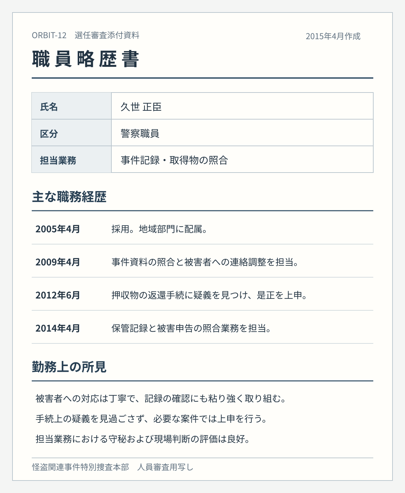

INTERNAL DECISION
ORBIT-12 VEIL-001 実行担当選任決議書
試験運用における実行役の選任と本人説明方針
内部資料・本人閲覧対象外
ORBIT-12／VEIL-001
決議内容
ORBIT-12の試験運用にあたり、警察内部の職員である久世正臣を、VEIL-001／怪盗マーキュリーの実行担当として選任する。現場では素性を伏せ、指定対象への接近と持出しを行わせる。
選任理由
久世は被害者対応と記録照合の経験があり、現場での判断、守秘、任務遂行の評価が高い。一方、手続上の疑義を見過ごさず上申する傾向がある。審査では、被害者保護に資する任務だと理解すれば、自ら協力を申し出る可能性が高いと判断した。
本人への説明方針
久世には、通常の手続では保全が間に合わない被害関係資料を、人を守るために回収する非公開任務だと説明する。怪盗マーキュリーの名義で活動することは伝えるが、指定資産の移送先、資料の回収理由、事件後の捜査記録の調整については知らせない。
任務への疑問が示された場合も、被害者保護と公益性を説明し、計画の全体像には言及しない。
審査添付資料
選任時に参照した職員略歴書の写し。
